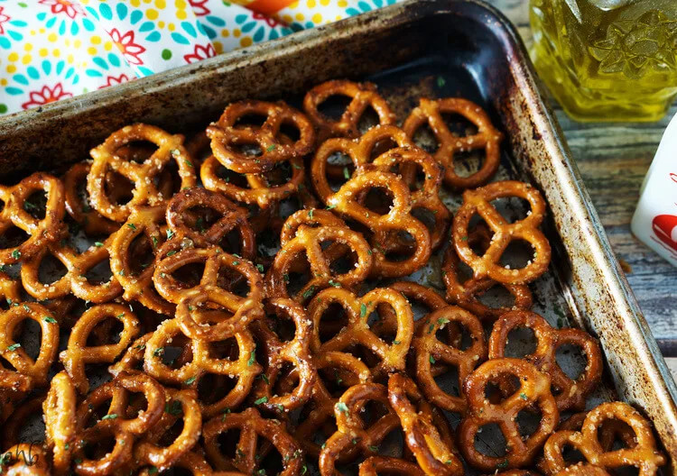

Zesty Italian Seasoned Pretzels

Description
These zesty Italian seasoned pretzels are an addictive snack that is so easy to make, but hard to stop munching on.
Ingredients
- 1 (15 oz) bag of pretzels
- 1 (.7 ounce) packet Italian dressing mix
- 3/4 teaspoon cayenne pepper
- 1/2 teaspoon dried parsley
- 1/4 cup butter, melted
- 1/3 cup vegetable oil
Steps
- In a large ziplock bag, mix all of the ingredients.
- Let pretzels sit in the bag for 15 minutes then shake the bag and lay the bag over on the other side. Let it sit for another 15 minutes.
- Preheat over to 250 degrees. After the pretzels have finished marinating, spread them on a large cookie sheet and bake for 30-45 minutes. Stir the pretzels half way through. They will be done when there is no more oil and the pretzels look dried. Let them cool before storing.